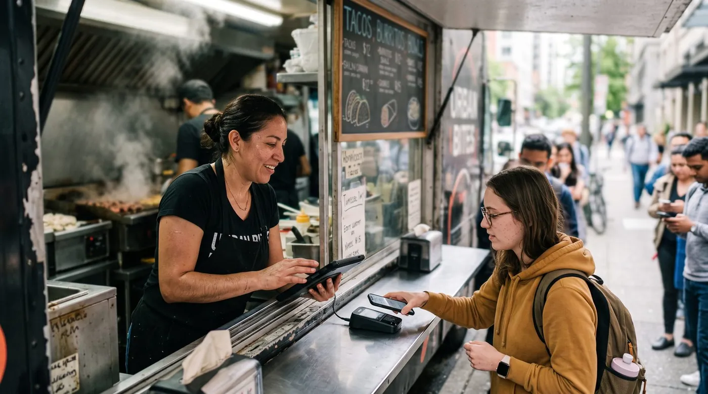

Best POS System for Food Trucks in 2026
A food truck is the toughest place on earth to run a checkout. You're working off a tiny counter, on battery power, with a phone signal that drops the moment a crowd shows up, and a line of hungry customers who will walk if you fumble. The right point-of-sale (POS) system for your food truck makes all of that disappear; the wrong one stalls your busiest hour. This guide covers what actually matters on the road, what it really costs, and how the popular options stack up. No hype, just what works at the serving window.

Why a food truck POS is different
A point-of-sale system for a food truck is not a shrunken restaurant POS. The constraints are completely different. A bricks-and-mortar café has stable Wi-Fi, mains power, a wide counter and a fixed location. A food truck has none of that. You move pitch every day, you run on a battery, your menu is short and changes with what you bought that morning, and your "network" might be one bar of cellular signal shared with a thousand festival-goers.
Worth reading next: before you sign anything, check payment fees calculator, then Square vs Toast vs Clover vs Loyverse. If it applies to you, also read about staff scheduling.
That changes the priorities. In a restaurant, the floor plan and table management dominate. On a truck, the make-or-break questions are simpler and harsher: Will it still take payments when the signal dies? Can I ring up a meal in two taps? Will the battery survive a six-hour service? Get those three right and almost everything else is a bonus.
Offline mode: the non-negotiable
If you read nothing else, read this. For a food truck, true offline mode is the single most important feature, more important than fancy reporting, loyalty schemes or even the price tag. Festivals, parking lots, rural events and dense city crowds all kill cellular data exactly when you're busiest. A POS that needs the internet to function will leave you taking cash-only orders during the one hour that pays your week.
But "works offline" is a phrase vendors stretch. There's a big difference between an app that merely keeps the screen open and one with true offline mode that records every sale locally and syncs automatically the moment a connection returns, without you having to think about it. Ask the awkward question before you buy:
"If my internet drops mid-service, can I keep ringing up orders and taking card payments, and does everything sync by itself when I'm back online?" If the answer is anything but a clear yes, keep looking.
The gold standard is offline-first: the app assumes the connection is unreliable and treats the local device as the source of truth, then reconciles with the cloud in the background. That's the behaviour that turns a dead zone from a crisis into a non-event.
7 features that matter on the road
Ignore the long feature lists. For a food truck, these are the seven that change your day:
1. True offline mode with auto-sync
Covered above, and it earns the top spot for a reason. Sell through any dead zone, sync without lifting a finger.
2. Fast checkout for a small, fixed menu
You sell maybe 8-20 items, all day. The screen should show your whole menu at a glance with big tap targets, so a new staffer can ring a combo in seconds with one hand. Speed at the window is your real throughput.
3. Contactless & mobile payments
Tap-to-pay cards, phone wallets and QR ordering are now the default at the curb. A reader that accepts a quick tap keeps the queue moving far better than chip-and-insert.
4. Mobility & battery life
The system has to live on a tablet or phone and survive a full service on battery. Lightweight software that doesn't drain the device, plus a small, rugged reader, beats a power-hungry suite every time.
5. Daily stock tracking
You prep a finite number of portions. A simple per-item count that ticks down as you sell, and warns you when the pulled pork is nearly gone, stops you from selling what you no longer have.
6. Queue-friendly flow & tabs
Festivals mean regulars and big group orders. Being able to open a customer tab or take credit for a known buyer, then close it later, smooths the busiest stretches.
7. Daily reporting you'll actually read
End-of-day totals, best-sellers and which pitch earned the most. Lightweight numbers that help you decide what to prep, and where to park, tomorrow.
The real costs (including card-processing fees)
Food truck POS pricing has two layers, and most vendors focus on the wrong one.
Layer 1: software subscription
This ranges from $0 on genuine free plans to roughly $25-$69+ per month for paid tiers. For a seasonal or part-time truck, the free tier is often all you need, and it's the smaller number anyway.
Layer 2: card-processing fees (the big one)
Every card tap carries a fee. In the US, in-person rates are typically around 2.3%-2.9% plus roughly 10-15 cents per transaction, depending on provider and plan. Here's the catch many "free" apps don't shout about: several of them force you onto their own payment processor, so that commission is non-negotiable. Over a season of card sales, the processing bill usually dwarfs any subscription.
So the smartest question for a food truck owner isn't "how much is the app?" It's "do you force a payment commission, or can I keep 100% of my card sales?" On thin street-food margins, half a percentage point on every order adds up fast.
Our top pick for food trucks
digabloPos
For a food truck that wants to start lean and stay in control of its costs, digabloPos is the strongest all-rounder. The base plan is free forever (no time limit, no credit card), and you're ringing up sales in about 5 minutes on a tablet or phone you already own. Its standout feature is exactly the one trucks need most: true offline mode with automatic sync, so a dead zone at a festival never stops a sale. Checkout is fast for a small fixed menu, it accepts contactless and mobile payments, and there's no forced payment commission, you keep 100% of your card sales instead of handing a cut to the POS on every order. It also includes customer credit / tabs management for regulars and big group orders, multi-currency as a paid add-on for tourist-heavy pitches, and pay-as-you-grow modules you switch on only when the truck grows into them.
👍 Strengths
- Free forever, no credit card, live in ~5 min
- True offline mode with auto-sync, sell through any dead zone
- Fast checkout for a small, fixed menu
- Contactless & mobile payments
- No forced commission, keep 100% of card sales
- Customer credit / tabs management
- Multi-currency, as a paid add-on (about $10/month)
- Pay-as-you-grow modules
- Ready for e-invoicing / electronic invoicing
👎 Notes
- Newer brand than the US giants
- Some advanced modules are paid
- You arrange your own card reader/processor
Want to test it without spending a cent?
Set up a real, working register for your truck in about 5 minutes. Free forever, no credit card, and it keeps selling even when the signal drops.
Create my free register, 5 minComparison table
The most-recommended food truck systems, side by side. Figures are approximate US pricing and change often, treat them as a starting point, not gospel.
| Criterion | digabloPos | Square | Toast | SpotOn | Loyverse |
|---|---|---|---|---|---|
| Free plan | Yes (forever) | App free | Free Starter* | Paid plans | Yes* |
| Software / month | $0 base | $0 / $49+ | $0 / ~$69+ | from ~$25 | $0 + add-ons |
| In-person card fee | No forced commission | ~2.6% + 15¢ | ~2.49%-3.09% + 15¢ | Custom rate | Via chosen reader |
| True offline mode | Yes | Partial | Partial | Partial | Partial |
| Fast small-menu checkout | Yes | Yes | Yes | Yes | Yes |
| Customer tabs / credit | Yes | Partial | Partial | Partial | Limited |
| Multi-currency | Yes, paid add-on | Partial | Limited | Limited | Partial |
| Setup time | ~5 min | Fast | Onboarding | Onboarding | Fast |
*Free or starter tiers come with conditions (higher processing rates, paid add-ons, or hardware requirements). Pricing checked June 2026 against official pricing pages and specialist comparison sites. Vendor pricing changes frequently and varies by country, plan and contract, always confirm current rates on each official site before deciding.
How the well-known options stack up
Square is the default recommendation for food trucks: the POS app is free, the hardware is compact and iPad-friendly, and setup is easy, but the model rests on a per-transaction fee of about 2.6% + 15¢ in person on the free plan, and its offline behaviour is limited. Toast is purpose-built for food and has strong inventory and customer tools, which suit a truck that's scaling fast, though it carries restaurant-grade pricing and onboarding. SpotOn tends to be the cheaper option among paid plans, starting around $25/month, with custom processing rates. Loyverse is a genuinely good free register with solid item tracking, but advanced features are sold as add-ons and offline support is partial. Across all of them, the recurring gaps for a truck are the same: limited true offline mode and a forced processor, exactly where a free-forever, offline-first option with no forced commission pulls ahead.
Hardware & battery checklist
Software is only half the kit. Keep the hardware small, rugged and power-aware:
- Tablet or phone you already own, a bring-your-own-device POS keeps upfront cost near zero and means a spare device in the glovebox if one dies.
- A compact contactless reader, one that taps cards and phone wallets, charges over USB-C, and fits on a crowded counter.
- All-day battery, choose lightweight software that doesn't drain the device, carry a high-capacity power bank, and keep a 12V car charger wired in.
- A daylight-readable screen, you'll be serving in direct sun; max brightness and a matte case help.
- A backup plan for signal, true offline mode is your primary safety net; a cheap data SIM as a hotspot is a useful second.
5 mistakes to avoid
- Trusting a vague "works offline" claim. Many apps only run in a limited offline state and lose card acceptance. Insist on true offline mode with automatic sync, and test it with airplane mode before your first service.
- Judging by the subscription alone. A "free" app that forces 2.9% on every card sale can cost far more than a modest plan with cheaper processing. Compare the full-season total.
- Ignoring forced commissions. If the POS makes you use its processor, you can't shop your rate down. Prefer systems that let you keep 100% of card sales.
- Over-buying features. You don't need a full restaurant floor plan or three locations on a truck. Start lean; switch modules on when the need is real.
- Forgetting power. A dead tablet at the lunch peak is a lost day. Pick efficient software and carry backup power.
Ready to serve your first order?
Create a free register in about 5 minutes, no commitment, no credit card, you keep 100% of your card sales, and it keeps selling even when the signal drops.
Create my free register, 5 minFAQ
What is the best POS system for a food truck in 2026?
There's no single winner for every truck, but the best food truck POS shares three traits: true offline mode that keeps you selling on weak or dead signal, lightning-fast checkout for a small fixed menu, and contactless and mobile payment acceptance. A free-forever app with no forced payment commission lets a seasonal or part-time vendor keep costs near zero while keeping 100% of card sales.
Do food truck POS systems work without internet?
The best ones do. With true offline mode the app stores every sale locally on the device and syncs automatically when the connection returns, so a dead zone or a crowded festival network never stops a sale. Many apps only run in a limited offline state and lose card acceptance, confirm true offline support before you commit.
How much does a food truck POS system cost?
Software runs from $0 on a genuine free plan to roughly $25-$69+ per month for paid tiers. The bigger cost is usually card processing, typically around 2.3%-2.9% plus about 10-15 cents per in-person transaction in the US. Some apps force their own processor; others let you keep 100% of card sales, so add 12 months of processing to the sticker price.
What hardware do I need for a food truck POS?
Most modern setups run on a tablet or phone you already own plus a compact contactless card reader. Prioritise long battery life, a screen readable in daylight, and a reader that taps both phones and cards. Keep the kit small and rugged, a truck has limited counter space and bounces down the road.
Can a free POS system handle a busy lunch rush?
Yes. A good free cloud POS rings up a small menu in a couple of taps, works offline through the rush, and tracks daily stock so you stop selling what you've run out of. You add paid modules such as loyalty or deeper inventory only when the truck grows into them.
Official sources
Prices and features move often. Here is the vendors' own documentation, so you can check for yourself.
- Loyverse Help Center : what the vendor documents itself about features and pricing.
- Square Support Center : what the vendor documents itself about features and pricing.